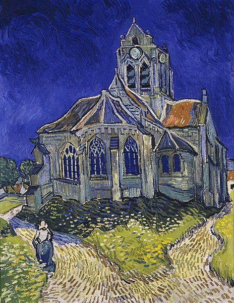
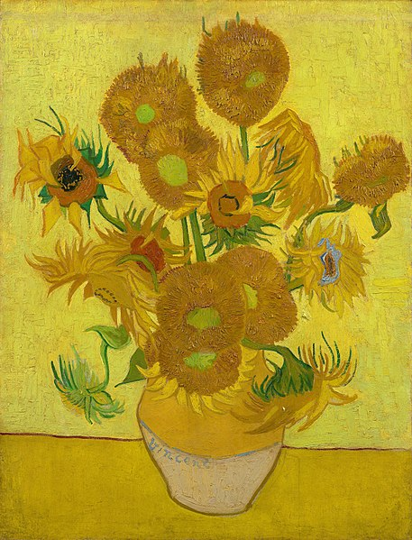
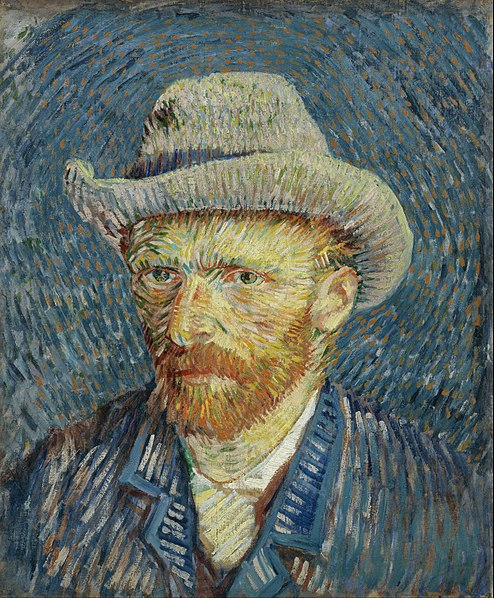

The Church at Auvers
1890

Sunflowers (4. Version)
1889

Der niederländischer Maler Vincent van Gogh wurde erst nach seinem Tod als einer der einflussreichsten Künstler erkannt. Er war post-impressionistisch.